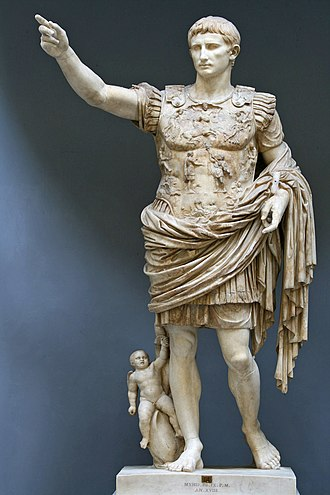
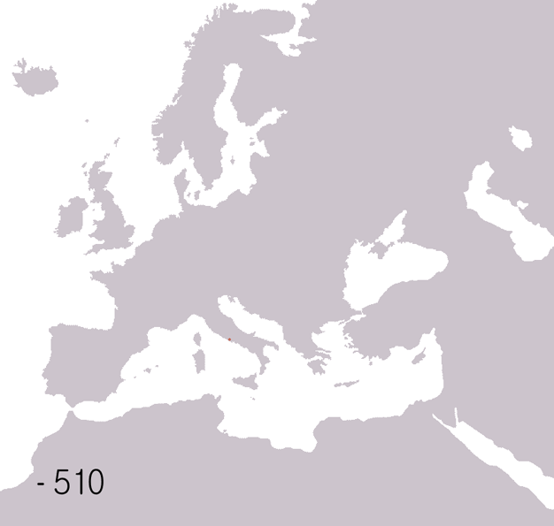

Ascensiunea și căderea Imperiului Roman: O privire asupra evoluției unei puteri antice
A fost precedat de Republica Romană care, la rândul ei, a înlocuit monarhia de la Roma în secolul al VI-lea î.Hr., guvernată de doi consuli cu puteri executive și cu mandate limitate la un an și condusă de o adunare legislativă numită Senat. Republica era însă totodată un imperiu, deținând teritorii cucerite. Fiind destabilizată de o serie de războaie civile și conflicte politice dintre generali ambițioși, în secolul I î.Hr. generalul Iulius Cezar a fost numit dictator pe viață, dar a fost asasinat în anul 44 î.Hr. în urma unui complot al senatorilor. Au reizbucnit astfel războaiele civile care s-au încheiat cu victoria lui Octavianus Augustus, nepotul și fiul adoptiv al lui Cezar, care l-a învins pe generalul Marcus Antonius în Bătălia de la Actium din anul 31 î.Hr. Octavianus și-a asigurat controlul total asupra imperiului, iar Senatul Roman i-a garantat puteri executive nelimitate, titlul de Imperator (comandant suprem al armatei) și titlul de Augustus, devenind astfel primul împărat al Imperiului Roman
În primele două secole imperiul a cunoscut o perioadă de stabilitate și prosperitate fără precedent, cunoscută în istorie ca Pax Romana („Pacea romană”). Maximul teritorial a fost atins în timpul domniei împăratului Traian. A urmat apoi o perioadă instabilă și astfel, declinul imperiului a început sub domnia împăratului Commodus. În secolul al III-lea, imperiul a traversat o perioada de criză ce i-a amenințat existența și integritatea teritorială, dar a fost reunificat de împăratulAurelian. În efortul de a stabiliza imperiul, Dioclețian a împărțit imperiul între două curți imperiale diferite în estul grecesc și vestul latin. Creștinismul a luat amploare în secolul al IV-lea, devenind religia oficială a imperiului> în urma Edictului de la Milano din 313 sub domnia lui Constantin cel Mare și a celui de la Tesalonica din 380. După moartea împăratului Teodosiu I din 395, imperiul a fost împărțit definitiv între fii săi Arcadius și Honorius, în Imperiul Roman de Apus și Imperiul Roman de Răsărit.
Perioada Migrațiilor, ce a presupus invazii masive ale populațiilor germanice și hunice a dus la declinul final al Imperiului Roman de Apus. Odată cu cucerirea Ravennei de către ostrogoți și înlăturarea ultimului împărat roman, Romulus Augustulus în 476, Odoacru s-a proclamat drept rege al Italiei și astfel Imperiul Roman de Apus a colapsat și a fost desființat oficial de împăratul Zenon în 480. Imperiul Roman de Răsărit a continuat să existe ca Imperiul Bizantin, cu capitala la Constantinopol, până la cucerirea otomană din 1453.
Curiozități despre Imperiul Roman
Imperiul Roman se situează pe locul 25 în topul celor mai mari imperii, având 5 milioane de kilometri pătrați în anul 117 sub domnia împăratului Traian, cuprinzând 3,36% din suprafața terestră. Acesta stăpânea teritorii în Europa, Africa de Nord și Asia de Vest. Fraza latină "imperium sine fine" (imperiul fără de sfârșit) exprimă ideologia că nu există limite în timp și spațiu pentru imperiul roman. În poemul lui Virgiliu - Eneida, poporul roman era predestinat de către zeul Jupiter să stăpânească omenirea. Această afirmație a stăpânirii universale a fost reînnoită și perpetuată atunci când Imperiul a intrat sub guvernarea creștină în secolul al IV-lea. Pe lângă anexarea unor mari regiuni în cursul creșterii imperiului, romanii erau de asemenea "sculptori" foarte pricepuți ai mediului, modificând direct geografia. De exemplu, păduri întregi au fost tăiate pentru a furniza suficiente resurse de lemn pentru un imperiu în expansiune. Expansiunea romană a fost inițiată din timpul Republicii Romane în Spania, Grecia, Tunisia, Egipt, Turcia și Franța de azi, cucerite până în secolul 1 e.n. Sub domnia împăratului Augustus, o hartă a lumii cunoscute a fost afișată publicului în Roma, cu toate regiunile cartografiate de geografii, recenzorii și cartografii vremii precum Strabon. După moartea lui Augustus, realizările sale au fost consemnate în Res Gestae.
S-a estimat că populația număra 70-100 de milioane de locuitori, cu densitate 11.2 pe kilometru pătrat în anul 164, adică un sfert din populația totală a planetei de atunci. Speranța de viață a populației pe perioada imperiului roman era de 25 de ani. A fost entitatea politică unificată cu cea mai mare populație din istoria Europei. Cele mai mari orașe ale imperiului au fost Roma, Alexandria, Smyrna, Efes, Cadiz, Nova Cartagina, Corint și Antiohia. Orașe de asemenea dimensiuni nu vor mai fi construite în Europa până în secolul al XVII-lea
Armata imperială romană era instituția care se ocupa de protecția imperiului. La apogeul puterii, armata romană era compusă din 30 de legiuni, trupe auxiliare și de cavalerie străine (numidienii, catafracții). Organizarea și disciplina erau de bază, iar trupele erau bine plătite și armata le dădea o șansă la o viață bună celor mai săraci, dacă supraviețuiau serviciului de 25 de ani.
Dinastiile împăraților romani
Războaie

Statuia împăratului Octavianus Augustus
Evoluția teritoriilor controlate de Roma Antică
Conținut suplimentar
Puteți obține mai multe informatții utile prin simpla apăsare a butoaneler